Identidade e interface do app de treinos da Domma Tecnologia · RedBox · 01/11/2026
Nome "Quaru" provisório, sujeito à análise da advogada e à busca no INPI (não consultado). Este documento é avaliação de design, não parecer jurídico.
O Quaru é um app em português para registrar treino de academia: rotinas (Treino A/B/C), séries com carga e repetições, timer de descanso automático, histórico com gráficos, peso corporal e diário alimentar compartilhado com o Pratolino. Funciona sem internet e sincroniza depois.
A marca nasce da função que acompanha cada série: o descanso. O símbolo é um Q-cronômetro: o anel é o mostrador, o botão no alto é o do cronômetro e a cauda do Q é um ponteiro curto e reto. Não usa halter, bíceps nem silhueta: fala de ritmo e constância.
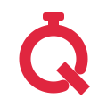
Anel = mostrador · botão = cronômetro · cauda = ponteiro
Fala como um parceiro de treino experiente: curto, no imperativo gentil, sem gritaria. Sim: "Descanso terminou. Próxima série: Supino reto." · "Treino salvo. Sincroniza quando a internet voltar." Não: "SEM DOR, SEM GANHO!!!", promessas de resultado ("perca 10 kg") ou comparação de corpos. Erros dizem o que aconteceu e o que fazer, e avisam quando nada foi perdido.
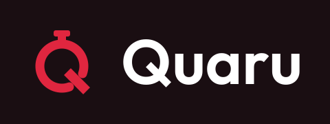
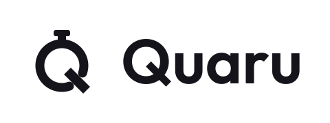
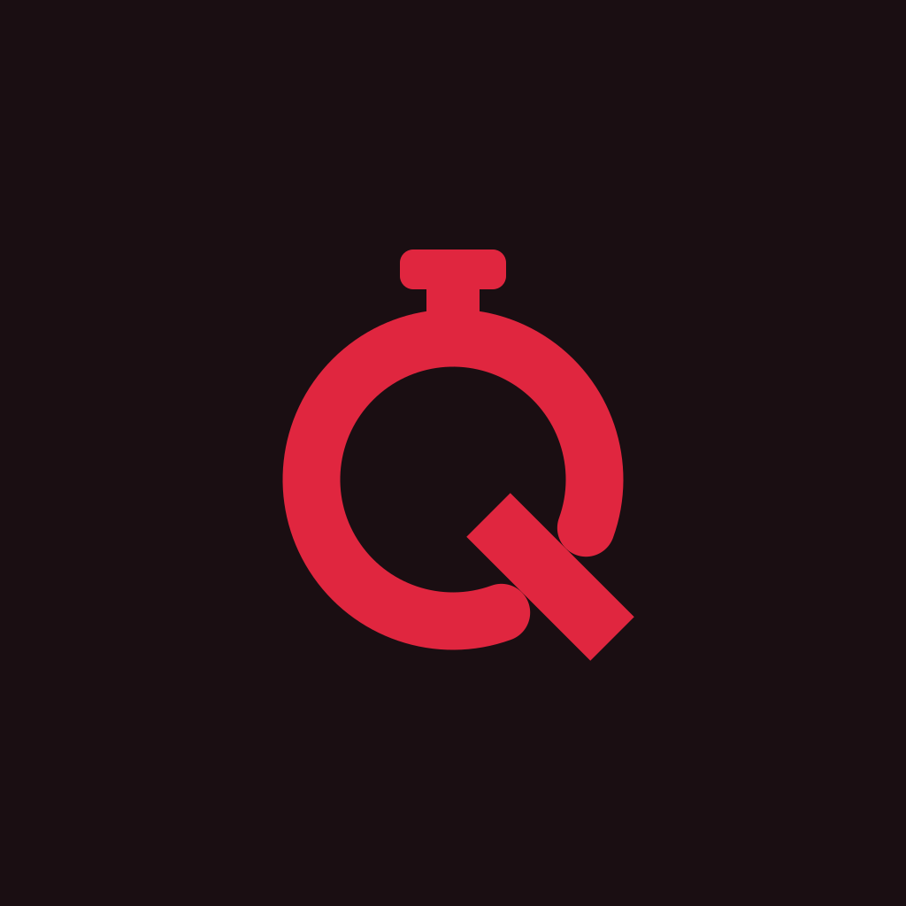
Arquivos finais (SVG em curvas, PDF vetorial, PNG 4000 px) em identidade/logo-oficial-quaru/. Fonte do logotipo: Outfit SemiBold (OFL 1.1).
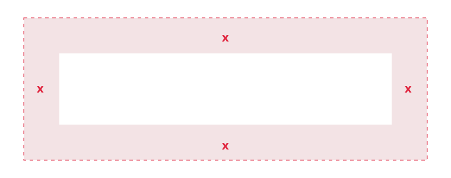
Mantenha livre em volta do logo uma margem x = metade da altura do símbolo (faixa rosada). Nada de texto, foto movimentada ou borda dentro dela.
16 px 32 px 48 px
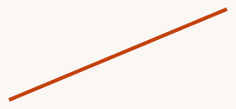
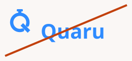
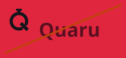
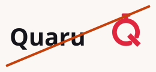
CMYK e Pantone são APROXIMADOS: conversão simples sem perfil ICC e Pantone escolhido pela cor mais próxima. Peça prova de cor na gráfica antes de imprimir.
| Estado | Tema claro | Tema escuro | Uso |
|---|---|---|---|
| Sucesso | #1A7F47 | #5CCB8C | série concluída, sincronizado |
| Alerta | #9A5B00 | #F2B04A | enviando, sem internet |
| Erro | #C2410C | #FF8A5B | falha, item recusado (vermelho-laranja, distinto do Carmim; sempre com ícone + texto) |
| Info | #2563C9 | #86AEF2 | atualizado em outro aparelho, dicas |
Texto normal exige 4,5:1 (AA); texto grande (≥ 24 px, ou ≥ 18,66 px em negrito) e elementos de interface exigem 3:1. Valores calculados pela fórmula de luminância relativa da WCAG 2.x.
Regra: Carmim sobre Vinho só para símbolo, ícones e textos grandes. Para texto pequeno no escuro, use Carmim 300. Na v1.1 o erro virou vermelho-laranja (#C2410C / #FF8A5B), distinto do Carmim; mesmo assim leva sempre ícone e texto.
| Par | Amostra | Razão | Nível |
|---|---|---|---|
| Branco sobre Carmim (botão) | Aa 123 | 4.65:1 | AA |
| Carmim sobre Branco | Aa 123 | 4.65:1 | AA |
| Carmim sobre Vinho | Aa 123 | 4.05:1 | AA texto grande / UI |
| Carmim 300 sobre Vinho | Aa 123 | 7.06:1 | AAA |
| Grafite sobre Fundo claro | Aa 123 | 17.20:1 | AAA |
| Texto 2 sobre Fundo claro | Aa 123 | 6.76:1 | AA |
| Branco sobre Vinho | Aa 123 | 18.83:1 | AAA |
| Texto 2 escuro sobre Superfície escura | Aa 123 | 8.14:1 | AAA |
| Carmim 700 sobre Carmim 50 | Aa 123 | 7.41:1 | AAA |
| Sucesso sobre Fundo claro | Aa 123 | 4.72:1 | AA |
| Sucesso (escuro) sobre Vinho | Aa 123 | 9.30:1 | AAA |
| Alerta sobre Fundo claro | Aa 123 | 5.09:1 | AA |
| Alerta (escuro) sobre Vinho | Aa 123 | 9.94:1 | AAA |
| Erro sobre Fundo claro | Aa 123 | 4.85:1 | AA |
| Erro (escuro) sobre Vinho | Aa 123 | 8.10:1 | AAA |
| Info sobre Fundo claro | Aa 123 | 5.31:1 | AA |
| Info (escuro) sobre Vinho | Aa 123 | 8.38:1 | AAA |
| Branco sobre Erro (botão destrutivo) | Aa 123 | 5.18:1 | AA |
| Erro sobre Branco | Aa 123 | 5.18:1 | AA |
| Erro (escuro) sobre Superfície escura | Aa 123 | 7.21:1 | AAA |
| Vinho sobre Erro (escuro) (botão destrutivo escuro) | Aa 123 | 8.10:1 | AAA |
| Vinho sobre Carmim (NÃO usar em texto pequeno) | Aa 123 | 4.05:1 | AA texto grande / UI |
| Carmim sobre Superfície escura | Aa 123 | 3.60:1 | AA texto grande / UI |
| Carmim 300 sobre Superfície escura | Aa 123 | 6.28:1 | AA |
Aa Bb Cc 0123456789
Regular 400 · Medium 500 · SemiBold 600 · Bold 700
Outfit, de Rodrigo Fuenzalida (Google Fonts), licença SIL Open Font License 1.1: uso comercial e embutir no app são permitidos; manter a licença junto (tela "Sobre e licenças"). Números do treino com tabular-nums para não "pularem" no timer. Alternativa: system-ui.
| Estilo | Tamanho/linha | Peso | Amostra |
|---|---|---|---|
| display | 48/56 px | 700 | Treino de hoje |
| titulo-1 | 32/40 px | 700 | Treino de hoje |
| titulo-2 | 24/32 px | 600 | Treino de hoje |
| titulo-3 | 20/28 px | 600 | Treino de hoje |
| corpo-g | 17/26 px | 400 | Treino de hoje |
| corpo | 15/22 px | 400 | Treino de hoje |
| legenda | 13/18 px | 500 | Treino de hoje |
| numero-timer | 56/60 px | 600 | 01:30 |
Peças de 1080 px: título ≥ 64 px, texto ≥ 36 px, aviso legal ≥ 24 px.
| Tela | Colunas | Margem | Calha |
|---|---|---|---|
| Celular | 4 | 16 px | 16 px |
| Tablet | 8 | 24 px | 24 px |
| Computador | 12 (máx. 1200 px) | 32 px | 24 px |
Raios: 8 (fichas, campos) · 12 (itens de lista) · 20 (cartões) · pílula (botões). Área de toque mínima: 44 × 44 px; itens de lista com 64 px. Espaço entre cartões: 16 px; dentro do cartão: 16–24 px.
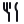
Desenho próprio: grade de 24 px, traço de 2 px, cantos arredondados e, quando há ponteiro, terminal reto, como no símbolo. Sempre com rótulo de acessibilidade.
Claro: branco sobre Carmim 4.65:1 · Carmim 600 #BC2035 sobre branco 6.18:1 · Erro sobre branco 5.18:1
Principal: branco sobre Carmim 4.65:1 (AA) · Secundário e Texto: Carmim 300 #EC7D8C sobre Vinho 7.06:1 (AAA), borda Carmim 4.05:1 (≥ 3:1 para UI) · Excluir: erro escuro sobre Vinho 8.10:1.
Carmim sobre Vinho (4.05:1) só vale para texto grande (≥ 24 px, ou ≥ 18,66 px em negrito), ícones e bordas. Vinho sobre Carmim tem o mesmo 4.05:1: nunca em texto de botão; no botão principal o texto é sempre branco.
Abas inferiores (5): Início · Rotinas · Treinar · Histórico · Perfil. A ativa fica em Carmim; as abas somem durante o treino.
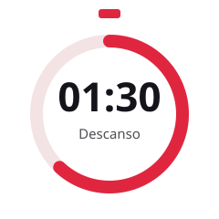
Contando (claro)
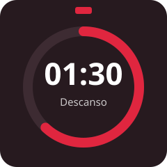
Contando (escuro)
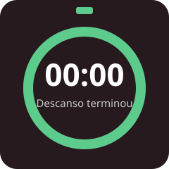
Terminado: verde e vibração
O cronômetro repete o símbolo: anel, botão no alto e progresso no sentido horário. Fica fixo no rodapé da tela de treino, com −15 s e +15 s. Ao terminar, a notificação diz "Descanso terminou. Próxima série: <exercício>", nunca carga nem peso.
| Estado | Visual |
|---|---|
| Série concluída | linha em verde de sucesso + ✓ |
| Recorde pessoal | selo Carmim com ícone de estrela + "Recorde" |
| Sem internet | selo neutro com ícone offline + "Salvo no aparelho" |
| Carregando | esqueleto cinza (acima de 300 ms) |
| Vazio | ícone + título + explicação + ação principal |
| Erro | ícone de alerta + o que houve + o que fazer, em vermelho de erro |
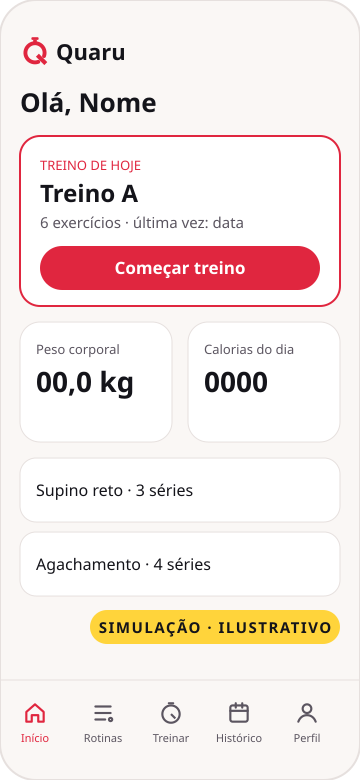
SIMULAÇÃO · ILUSTRATIVO · tema claro
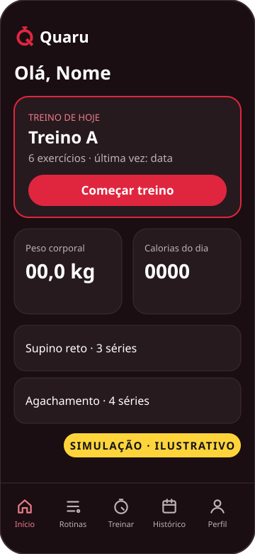
SIMULAÇÃO · ILUSTRATIVO · tema escuro
| Token | Claro | Escuro |
|---|---|---|
| fundo | #FAF7F5 | #1A0E12 |
| superficie | #FFFFFF | #271A1F |
| texto | #14141A | #FFFFFF |
| texto-2 | #5B5560 | #BDB2B6 |
| borda | #E6E0DE | #3D2B32 |
| primaria | #E0263F | #E0263F |
| primaria-texto | — | #EC7D8C |
| sobre-primaria | #FFFFFF | #FFFFFF |
O escuro é o tema padrão na academia (menos brilho entre séries); o claro segue a preferência do sistema. Nomes e números das telas são genéricos.
SIMULAÇÃO · ILUSTRATIVO
Simulação: montagem feita em vetor só para mostrar a aplicação da marca. Não é captura do app real nem página publicada em loja; nomes, números e textos são genéricos e não há avaliações.
SIMULAÇÃO · ILUSTRATIVO
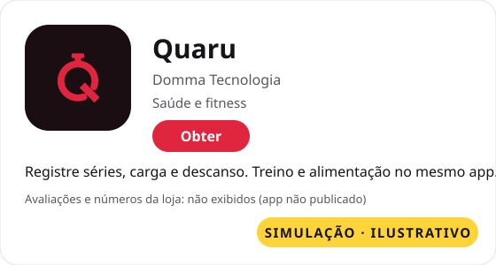
SIMULAÇÃO · ILUSTRATIVO · página da loja simulada; sem avaliações nem números
Ícone do app: símbolo Carmim sobre Vinho, cantos retos no arquivo (a loja aplica a máscara). Nome curto na tela inicial: "Quaru".
SIMULAÇÃO · ILUSTRATIVO
Simulação: peças de exemplo para mostrar o uso da marca, não aprovadas para veiculação. Textos ainda precisam passar pela Copy e pelo Compliance.
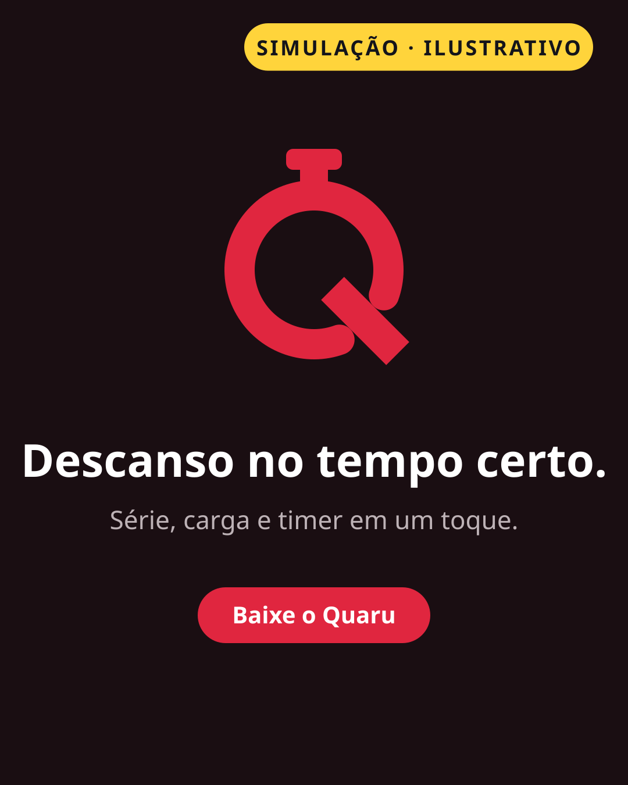
SIMULAÇÃO · ILUSTRATIVO · feed 4:5 (1080×1350)
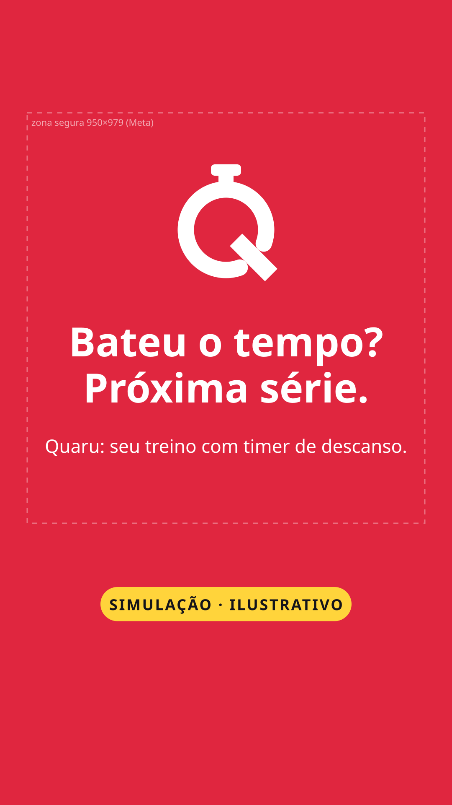
SIMULAÇÃO · ILUSTRATIVO · story 9:16 (1080×1920), texto dentro da zona segura
Peças de marca e lançamento. Para anúncios de performance, a RedBox usa foto e vídeo reais (pessoas treinando, tela do app em uso), com o logo e as cores deste sistema. Fotos de banco ou geradas vão marcadas como PROVISÓRIO. Nada de antes e depois, depoimento inventado ou número sem fonte.
| Faça | Não faça |
|---|---|
| Carmim só no que é ação ou destaque (1 por tela) | Pintar telas inteiras de Carmim no app |
| Erro com ícone + texto | Usar só a cor para indicar erro |
| Números com tabular-nums e vírgula decimal (52,5 kg) | Ponto decimal ou números que "pulam" no timer |
| Ícone de 16 px em favicon | Reduzir o logo completo abaixo de 120 px |
| Tom de parceiro de treino | Promessa de resultado, culpa, comparação de corpos |
Fonte Outfit (SIL OFL 1.1). Símbolo, ícones e ilustrações de interface: desenho próprio da RedBox em código (SVG), sem ativos de terceiros. Sem geração paga nem IA. Arquivos-fonte: identidade/design-system/ (HTML, CSS, SVGs, tokens.json, gerar_ds.py).
Aviso: avaliação de design, não parecer jurídico. O nome Quaru é provisório até a análise da advogada e a busca no INPI.